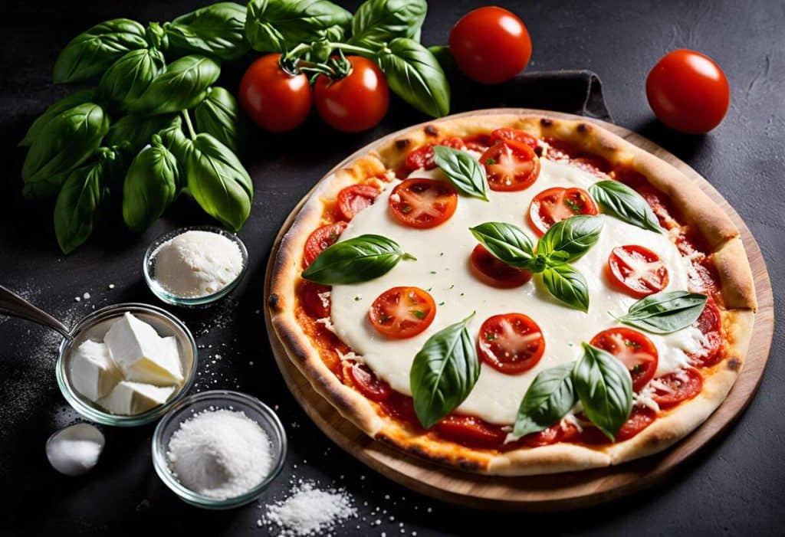
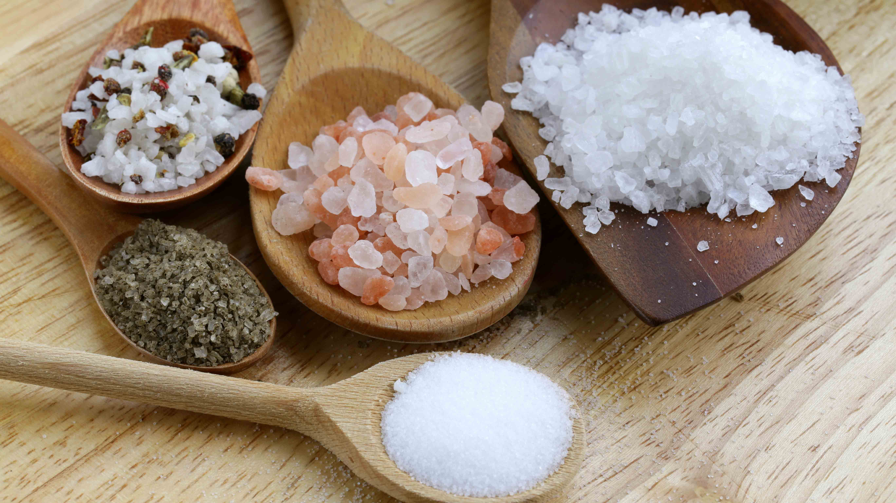
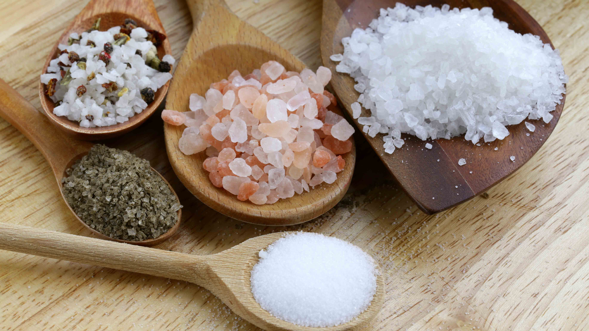

Pizza margherita
De pizza margherita is een typisch Napolitaanse pizza met als ingrediënten tomaten, mozzarella en verse basilicum, zout en olijfolie. Samen met de andere twee Napolitaanse pizza's, de pizza marinara (tomaat, knoflook, olijfolie en oregano) en de pizza margherita extra (als margherita, maar met buffelmozzarella) valt de margherita onder een keurmerk van de Europese Unie.
Meer informatie
Pizza Margherita , veel meer dan een simpele pizza, het is een nationaal embleem met de kleuren van Italië: groene basilicum, witte mozzarella en rode tomaat. De naam is een eerbetoon aan koningin Margherita di Savoia voor wie deze pizza oorspronkelijk werd gemaakt en vertegenwoordigt door zijn kleuren die van de Italiaanse vlag.

Traditioneel pizzarecept Margherita: authentieke Italiaanse smaken
Dompel jezelf onder in het hart van Italië met deze tijdloze klassieker: pizza Margherita. Een recept dat de eenvoud en authentieke smaken van de Italiaanse keuken viert, en dat je gemakkelijk thuis kunt maken. Volg deze gedetailleerde stappen om uw familie of vrienden een heerlijk en gezellig moment te bezorgen.
Ingrediënten
Portie voor 4 personen
- 300 gram tarwemeel
- 15 gram verse bakkersgist
- 180 milliliter lauw water
- 5 gram fijn zout
- 20 milliliter extra vergine olijfolie
- 400 gram gepelde tomaten uit blik
- 125 gram Mozzarella di Bufala Campana BOB (beschermde oorsprongsbenaming)
- verse basilicum
- grof zout voor pizzadeeg
Gebruiksvoorwerpen
- schaal
- houten lepel
- deegroller
- pizzaoven of traditionele oven
Voorbereiding
- Begin met het bereiden van het deeg: los de gist in een slakom op in lauw water.
- Voeg beetje bij beetje de bloem en het fijne zout toe. Kneed (krachtig mengen tot een homogene bal ontstaat) tot het deeg glad is.
- Voeg langzaam de olijfolie toe terwijl je blijft kneden.
- Dek de kom af met een schone doek en laat 2 uur rijzen bij kamertemperatuur (rust waarbij het deeg in volume toeneemt onder invloed van de gist) .
- Verwarm uw oven voor op 250° C (480° F) als het een traditionele oven is, zet anders uw pizzaoven aan.
- Rol het deeg met de deegroller uit op een met bloem bestoven werkblad tot je de gewenste maat hebt verkregen.
- Giet de gepelde tomaten af en pureer ze voordat je ze op de deegschijf verdeelt. Voeg een snufje grof zout toe.
- Scheur de mozzarella in kleine stukjes en verdeel deze over het hele oppervlak.
- Bak ongeveer 10 minuten, tot de randen goudbruin en knapperig zijn.
- Haal uit de oven: Garneer met een paar verse basilicumblaadjes.
Chef-tip
Het fruitige karakter van Chianti Classico gaat harmonieus samen met de eenvoudige maar diepe smaken van een Margherita-pizza.


 
